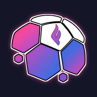

BFSL đã chuyển về bfsl.bloodflame.app
Đang chuyển bạn sang địa chỉ mới, mang theo tiến trình đang chơi…
Mang tiến trình sang bfsl.bloodflame.appBạn đang mở từ biểu tượng cũ trên màn hình chính.
- Bấm nút ở trên. Game mở ở bfsl.bloodflame.app, tiến trình đi theo.
- Ở đó bấm Chia sẻ rồi Thêm vào MH chính để có biểu tượng mới.
- Nhấn giữ biểu tượng cũ này rồi xoá đi.